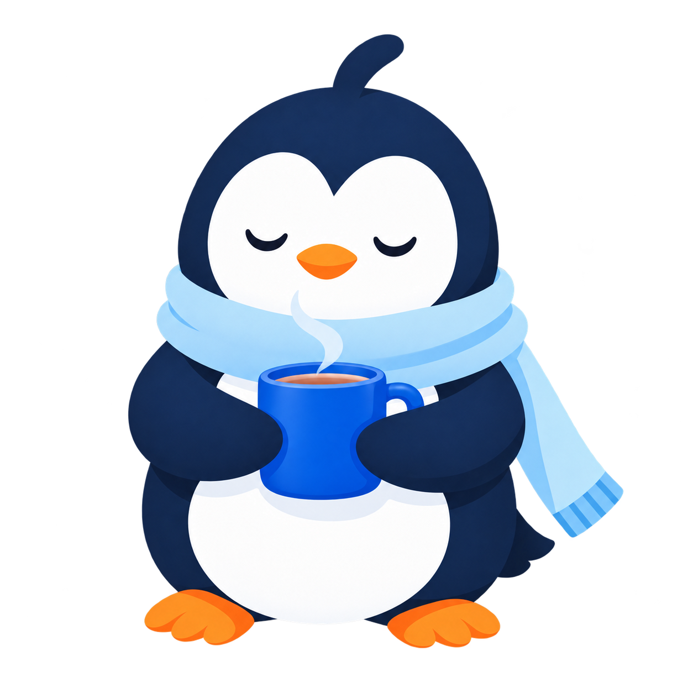
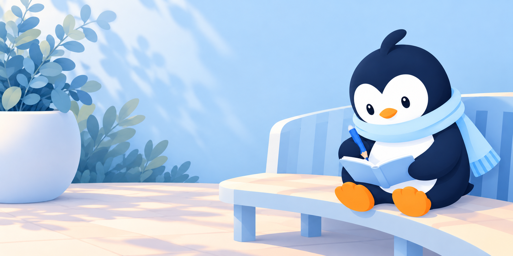

The old line-art icon became a soft, two-colour face. Same eyes, beak and scarf as every other Pingu, so the mark and the mascot are one character.


Full-body poses derived from the face: greeting, a warm drink, writing, listening. 21 avatars; the person picks one for the header.
 Calm
Calm Worried
WorriedTab icons, context chips and feeling portraits share the mascot's shapes and lighting, so a 26 px tag still reads as Pingu.

A 2:1 scene family drawn in the same ice-blue world, swapped by state: writing, listening, reflecting, refining. Decorative, never a mood score.